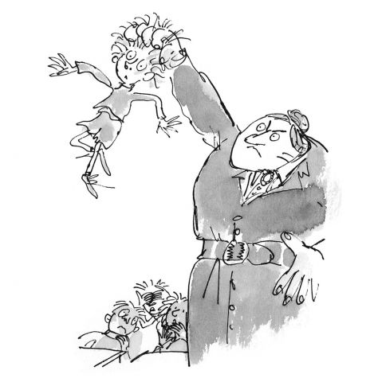

Here comes the sun
15-Apr-2017 | Milku
And by that I mean the celestial body rather than the "news" paper
The Sun wouldn't find a welcome in my house. One of my big humans supports Everton and has long been offended by things said in the paper about Liverpool. She's been even more incensed after it published unpleasant things about Ross Barkley, one of the Everton footballers. I look more like a gorilla than that young man.

And it's not just Liverpudlians who are treated badly by the media. I mentioned yesterday that references to hamsters in quotations are rarely flattering. I’d thought better of Roald Dahl, but in Matilda I read:
"You ignorant little slug!" the Trunchbull bellowed. "You witless weed! You empty-headed hamster! You stupid glob of glue!”
I have to tell you that I am most definitely not empty headed. I’m constantly devising schemes to outwit my hapless humans…but I can’t tell you anything about them as they might read this blog too…
Then in Monthy Python and the Holy Grail, a French soldier shouts to Sir Galahad:
"I don't want to talk to you no more, you empty headed animal food trough wiper. I fart in your general direction. Your mother was a hamster and your father smelt of elderberries."
So what's wrong with having a mother who is a hamster? I can think of far worse.
I'll just take comfort from Joanna Trollope. She said:
"The world's tragedy is that men love women, women love children, and children love hamsters."
So I'm loved three-fold. And I'm sure my big humans love me too given the amount of attention they give me.